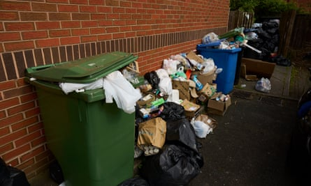
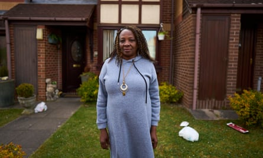
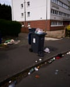

“It’s very frustrating that the posh areas get cleared and we’re just left, very frustrating but we expect it,” said Peter Thomas, outside his home in Ladywood, against a backdrop of overflowing bins.
Across neighbouring postcodes in Birmingham, the gap between wealthy and deprived parts of the city has been noticeable for residents ever since the bin strikes began last month.
In the innercity district of Ladywood, local people felt frustrated at the lack of action taken over uncollected bins.
Thomas’s neighbour, Gloria Charles, 70, who has lived in her home for over 30 years, felt the uncollected rubbish was a source of embarrassment. The area had missed out on the clear-up operations.
“We do take pride in our little road, we try to keep it as clean as possible. The way it is now, do you invite anybody down here? I don’t want anybody to come and see me. Not with a place like this. It’s embarrassing,” she said. “I’ve been everywhere, just to see if anybody’s been collected around this area and nobody has been collected so I don’t know why we have been targeted for non-collection.”
Students said a lack of wheelie bins made the situation worse.Photograph: Christopher Thomond/The Guardian
Students living near Edgbaston reservoir said a lack of wheelie bins made the situation worse, despite having had a recent bin collection. Some of those who do have access to wheelie bins have added padlocks in the hope of deterring neighbours from using their bins.
Daniel Struczynski, a chef and culinary arts management student, said: “It’s awful because at the end of the day when we want to put rubbish out we have to put it on the streets and within like 12 hours the bags are all opened, the rubbish is all over the floor.”
He added that it made it a prime target for rodents. “You see rats throughout the night going through them and then crows throughout the day and sometimes even foxes walking around the road.”
Duha Aljuhani, 29, an international student living in student accommodation, said she felt the situation was dire due to not knowing when the bins in the communal waste areas at her accommodation would get collected. “It’s been really challenging especially with getting rid of the rubbish, and with the timings and it keeps getting worse and worse,” she said.
Meanwhile in the affluent, leafy parts of Edgbaston, Jamie Cotton, 33, an estate agent who was waiting to do a house viewing, said he had noticed the difference over the past month. The area was largely unaffected compared with others, he said. “Edgbaston notably hasn’t been hit as hard as some other areas shall we say. Went through Selly Oak yesterday, the student territory, and it was noticeably grim.”
Gloria Charles, 70, who has lived in her home for over 30 years, felt the uncollected rubbish was a source of embarrassment.Photograph: Christopher Thomond/The Guardian
Stephanie Ward, 77, who is retired, said the situation had been manageable as she had been able to move rubbish into her family’s rubbish collection in Sandwell and had a bin collection recently.
“We probably haven’t by any means had such a bad time as a lot of people in the city and we also have wheelie bins, which not everybody does, which I think makes quite a big difference. The service has always been quite good actually, believe it or not in the past as well.”
In addition, Radhakrishna Pillai, 64, a retired professor who lives in Edgbaston, said the area seemed well-looked after. “Fortunately for us since we have an estate agent that looks at the estate, they were good enough to come and remove the garbage after it started accumulating,” he said.
Rachel Adams , a senior research fellow at the Health Services Management Centre at the University of Birmingham, pointed to a range of factors that have potentially influenced these differences, including proximity to alternative disposal sites, access to transportation, and population density.
Norman Yousaf, the director of a waste disposal company, Monster Clearance, said he had experienced an influx of work, but that the upcoming bank holiday weekend would cause delays.
He said the differences in the buildup of rubbish across the city were more evident in more deprived areas, and that costs were a big factor.
Uncollected rubbish made the streets a prime target for rodents, one local person said.Photograph: Christopher Thomond/The Guardian
“They call in, they say £30 for a bin, I’ve got three bins here for goodness sake, that’s 90 quid, plus I’ve got 10 bin bags, that’s another 30 quid, so that’s what, £120? I can’t afford that … but in the affluent areas, people are just accepting the quote, [they] just want it gone.”
He added: “I think the financial hit is wholly unfair to the end user because they’ve paid the council tax for the municipal waste to be collected. And it’s financially very unfair to all customers who have paid for a service they haven’t rendered.”